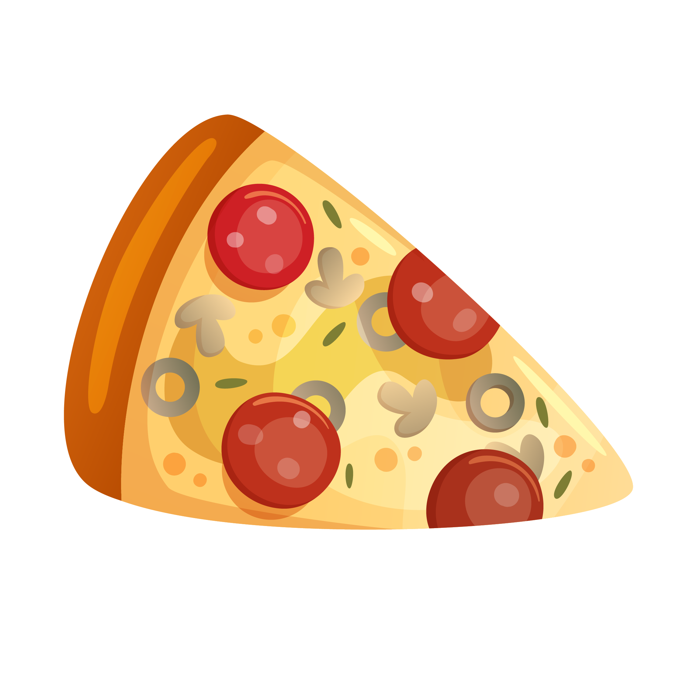
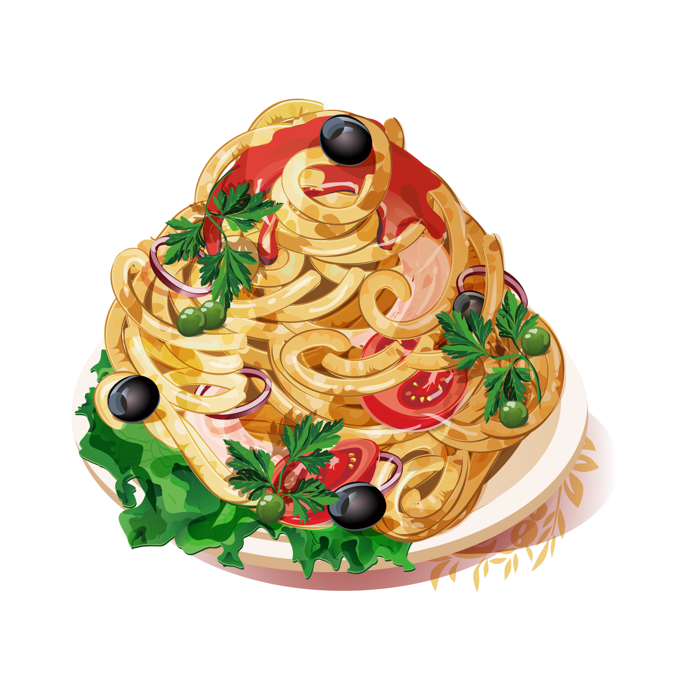

Yun's Restaurant
Location: 1111 Hayward Bivd , CA , USA 12345
Open Hours:7:00 ~ 23:00
Menu
Salads
ceasar salad
chinese chicken salad
chicken, mango and avocado salad

Pizza
cheese pizza
B.B.Q. chicken pizza
beef pizza
everything pizza

Pasta
tomato basil pasta
chicken pasta
beef pasta
everything pasta

Desserts
original cheesecakes
chocolate cheesecake
chocolate ice cream
chocolate brownie sundae

Popular
1.Cheese Pizza
Pizza is a savoury dish of Italian origin, consisting of a usually round, flattened base of leavened wheat-based dough topped with tomatoes, cheese, and various other ingredients (anchovies, olives, meat, etc.) baked at a high temperature in a traditionally wood-fired oven.

2.Cheesecake
Cheesecake is a sweet dessert consisting of one or more layers. The main, and thickest layer, consists of a mixture of soft, fresh cheese (typically cream cheese or ricotta), eggs, vanilla and sugar.
Pizza is a savoury dish of Italian origin, consisting of a usually round, flattened base of leavened wheat-based dough topped with tomatoes, cheese, and various other ingredients (anchovies, olives, meat, etc.) baked at a high temperature in a traditionally wood-fired oven.
2.Cheesecake
Cheesecake is a sweet dessert consisting of one or more layers. The main, and thickest layer, consists of a mixture of soft, fresh cheese (typically cream cheese or ricotta), eggs, vanilla and sugar.
Location